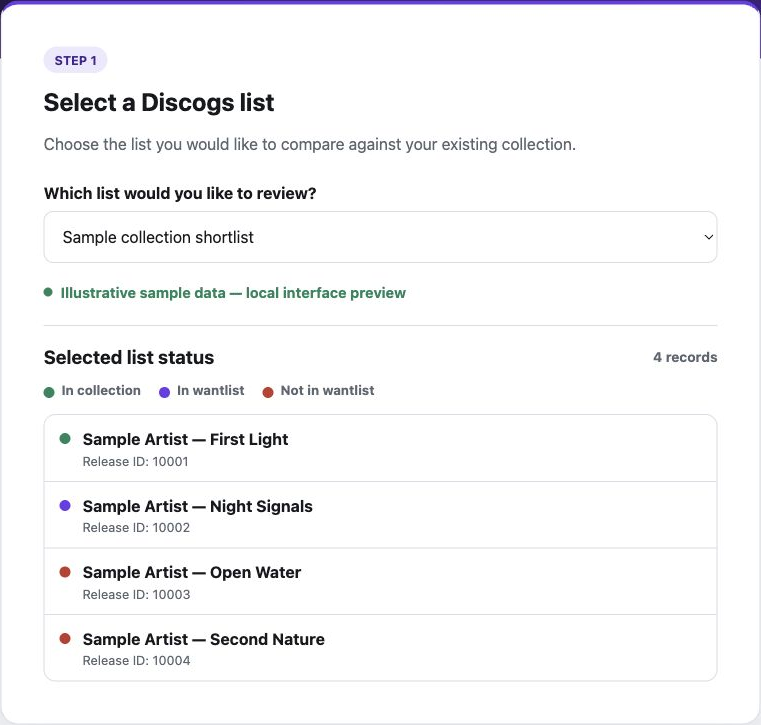
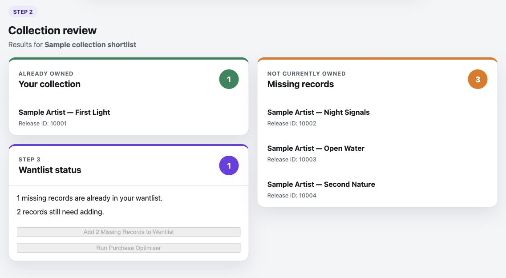

Retrieve complete account data
fetch_all_pages()Follows pagination for collection and wantlist endpoints, gathering records across all returned pages before comparison.
Project case study · In development
From a collection shortlist to a more informed purchasing plan.
Finding records is only part of building a collection. A shortlist still needs to be checked against records already owned, releases on a wantlist and the listings available from different sellers.
DPI brings those checks into a repeatable workflow. It is being developed to reduce manual comparisons, help avoid duplicate purchases and make the trade-off between item prices and the number of sellers easier to assess.
The project also provides a practical setting for developing API integration, application logic and a path from a local prototype to a cloud-based service.
The web interface currently covers collection and wantlist review. Listing validation and purchasing analysis run separately in the Python prototype.
Retrieve the releases from a selected Discogs list.
Separate owned releases from missing ones, then check the wantlist.
Assess supplied candidate listings against condition, location and seller criteria.
Compare item costs and seller combinations. Confirm shipping and purchases in Discogs.
Requests travel from the browser through the Python application to Discogs. The results return as a rendered page. The access token is read on the server from local configuration.
Supporting services in the proposed design
The proposed design separates the frontend from the backend. Lambda or container hosting will be selected after measuring request volume and processing time; the current local interface uses server-rendered HTML.
The main checks use Discogs Release IDs, so different editions or pressings are not treated as the same record simply because their titles match.
fetch_all_pages()Follows pagination for collection and wantlist endpoints, gathering records across all returned pages before comparison.
compare_list_with_collection()Checks each list item against a set of owned Release IDs and returns separate owned and missing groups.
compare_missing_with_wantlist()Separates missing releases already on the wantlist from those that would need adding.
evaluate_listing()Returns reasons for rejecting a listing, including media condition, seller location, rating, availability and missing prices.
group_plan_by_seller()Groups selected listings by seller. Related functions calculate the item subtotal and count sellers, making alternative plans easier to compare.
owned = []
missing = []
for item in list_items:
release_id = item.get("id")
if release_id in collection_release_ids:
owned.append(item)
else:
missing.append(item)
return owned, missingExcerpt from the current collection comparison function. A set of collection IDs supports direct membership checks for each release.
These views show the existing local interface rendered with illustrative records. They demonstrate the review screens without using live account data. Select an image to view it at full size.

The selected list is brought into one view, with an ownership and wantlist status for each release.

Results separate owned and missing releases. Wantlist updates and the purchase optimiser buttons are currently disabled in the interface; connecting these actions is a next step.